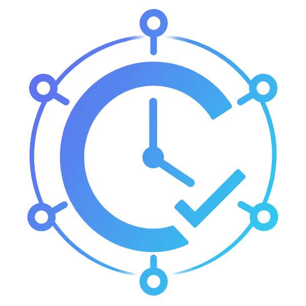

<div class="theia-preload chronos-preload">
  <style>
    .chronos-preload {
      display: flex;
      align-items: center;
      justify-content: center;
      background: radial-gradient(circle at 50% 35%, #20254d 0%, #0e1024 70%);
    }
    .chronos-preload::after { content: none; }
    .chronos-splash {
      display: flex;
      flex-direction: column;
      align-items: center;
      font-family: -apple-system, "Segoe UI", Roboto, Helvetica, Arial, sans-serif;
      color: #e7e9f5;
    }
    .chronos-splash .logo {
      height: 96px;
      width: auto;
      max-width: 180px;
      object-fit: contain;
      margin-bottom: 22px;
      filter: drop-shadow(0 6px 18px rgba(0,0,0,.45));
    }
    .chronos-splash .title { font-size: 26px; font-weight: 600; letter-spacing: .5px; }
    .chronos-splash .sub { font-size: 13px; color: #aab0d8; margin-top: 6px; }
    .chronos-splash .bar { width: 180px; height: 3px; margin-top: 26px; border-radius: 3px; background: rgba(255,255,255,.12); overflow: hidden; }
    .chronos-splash .bar > i { display: block; width: 40%; height: 100%; border-radius: 3px;
      background: linear-gradient(90deg, #ffd66b, #e8a93c); animation: chronos-slide 1.1s ease-in-out infinite; }
    @keyframes chronos-slide { 0% { transform: translateX(-120%);} 100% { transform: translateX(320%);} }
  </style>
  <div class="chronos-splash">
    
    <div class="title">Chronos IDE</div>
    <div class="sub">powered by Kairos</div>
    <div class="bar"><i></i></div>
  </div>
</div>
